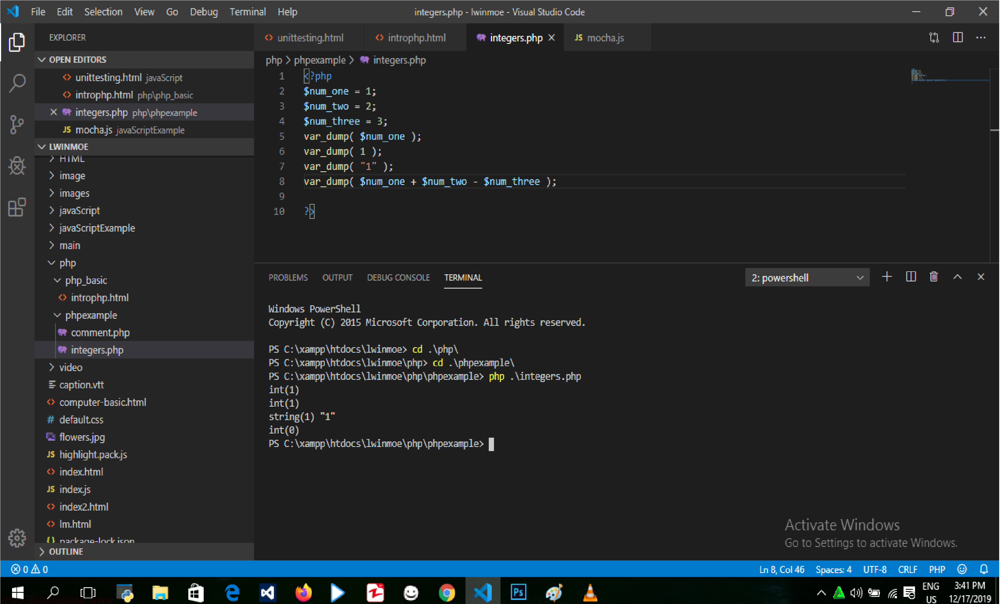
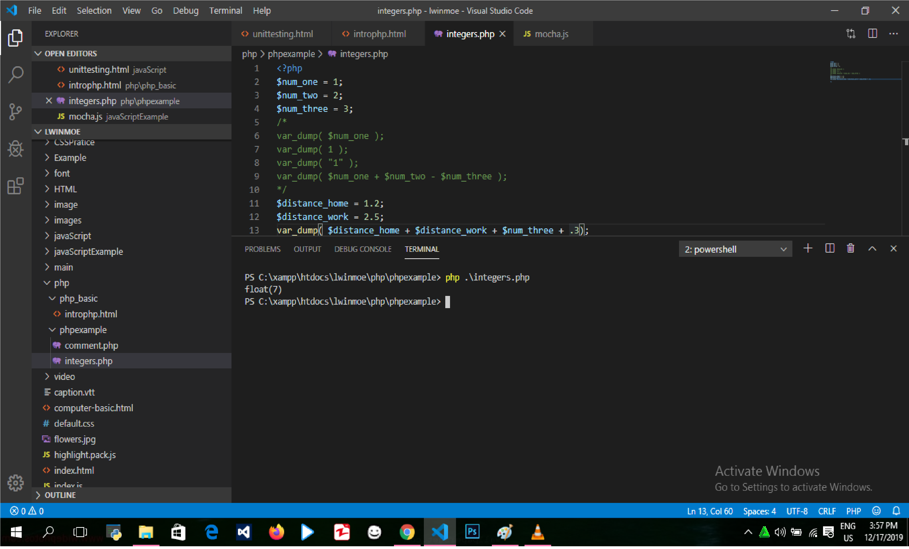
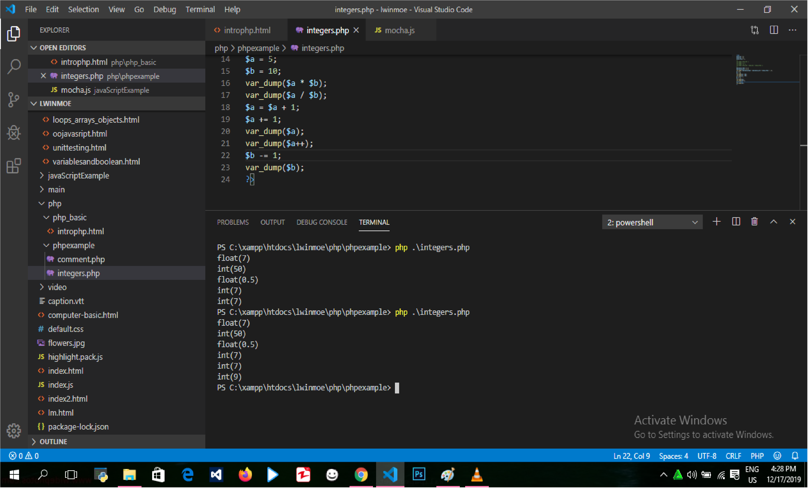
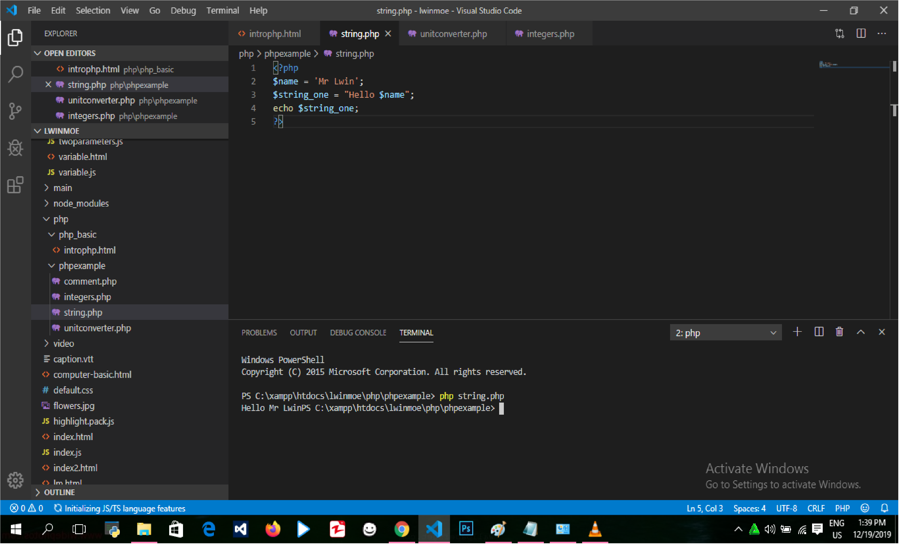
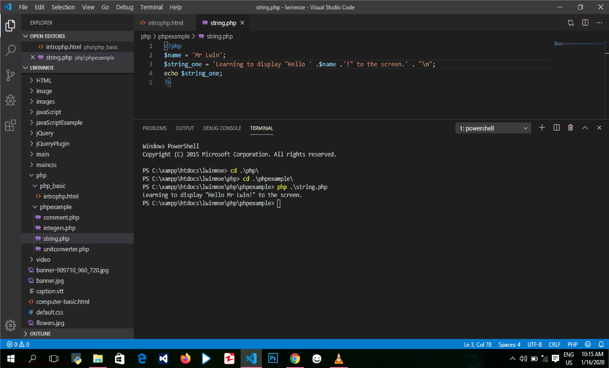
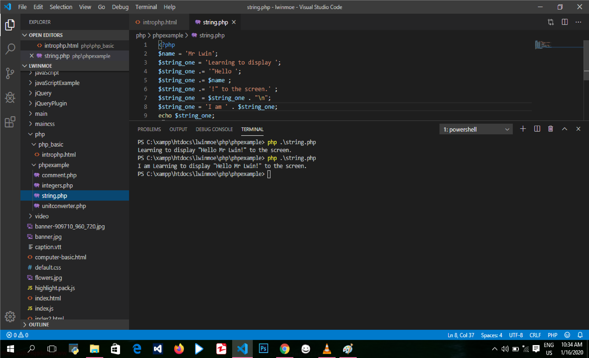

PHP ဟာ ယနေ့ခေတ်မှာ အသုံးများတဲ့ technologies တွေထဲက တစ်ခုဖြစ်ပါတယ်။ WordPress Durpal, Wikipedia or facebook တို့ကို PHP ကိုအသုံးပြုပြီးတော့ build လုပ်ထားတာဖြစ်ပါတယ်။ Web ရဲ့ 25% ကို PHP ပေါ်မှာပဲ built လုပ်ထားကြတာဖြစ်ပါတယ်။ PHP ဟာ personal project တစ်ခုအနေနဲ့ စတင်ခဲ့တာဖြစ်ပြီးတော့ သူ့ကို Rasmus Lerdorf ဟာ သူ့ရဲ့ personal webpage maintenance အတွက် အသုံးပြုခဲ့ပါတယ်။ အစမှာတော့ PHP ဟာ personal home page tools တွေအတွက် abbreviation တစ်ခုဖြစ်ခဲ့ပါတယ်။ 1995 မှာတော့ PHP ကို world ဆီကို release လုပ်ခဲ့ပါတယ်။ ပြီးတော့ other developers တွေဟာ သူ့ကို learn လုပ်ပြီးတော့ အသုံးပြုဖို့စတင်ခဲ့ကြပါတယ်။ Programmers နှစ်ယောက်ဖြစ်တဲ့ Andy Goodman and Steve Zeroski တို့ဟာ PHP ကိုအမှန်တစ်ကယ်ကြိုက်ခဲ့ကြပါတယ်။ ဒါပေမဲ့ သူတို့ဟာ e-commerce application တစ်ခုကို power ပေးဖို့ရန်အတွက် လိုအပ်တဲ့ PHP ရဲ့ inefficient and lacking features တွေ့ရှိခဲ့ကြပါတယ်။ PHP ရဲ့ stands ကတော့ PHP hypertext preprocessor ပဲဖြစ်ပါတယ်။ Open source project တစ်ခုလိုပဲ PHP မှာဆိုရင် around ten developers ရဲ့ core team တစ်ခုရှိပါတယ်။ နောက်သူ့မှာ bug fixes and improvements အတွက် quality assurance, documentation, and suggestions တွေကို help လုပ်နိုင်တဲ့ other contributors တွေလည်းရှိပါသေးတယ်။ PHP core အပြင် ကျွန်တော်တို့ရဲ့ programs ထဲကို functionality ကို add လုပ်ဖို့ရန်အတွက် အသုံးပြုနိုင်တဲ့ frameworks တွေနဲ့ packages တွေလည်း ရှိပါသေးတယ်။ 2015 ထဲမှာ 20 old PHP ကို turned လုပ်ခဲ့ပါတယ်။ အဲ့မှာပဲ PHP seven ကို release လုပ်ခဲ့ကြပါတယ်။ အဲ့ဒါဟာ previous version ရဲ့ speed ထက် နှစ်ဆ rewrite လုပ်နိုင်ပါတယ်။ Installatin လုပ်တဲ့နေရာမှာလည်း complicated ဖြစ်စရာမလိုပါဘူး။ ဘာကြောင့်လဲဆိုတော့ most serves တွေဟာ pre-installed with PHP နဲ့ လာတဲ့အတွက်ကြောင့်ပဲဖြစ်ပါတယ်။ အဲ့ဒါဟာ web site တစ်ခုကို create လုပ်ဖို့ရန်အတွက် PHP ကို အသုံးပြုတဲ့အခါမှာ easy ဖြစ်စေပါတယ်။ ကျွန်တော်တို့ဟာ PHP code တွေကို HTML ထဲမှာ code blocks ကို အသုံးပြုပြီးတော့ directly embed လုပ်နိုင်ပါတယ်။ ပြီးတော့ ချက်ချင်းပဲ browser မှာ results ကို preview လုပ်နိုင်ပါတယ်။ အဲ့မှာဆိုရင် PHP code တွေကို some other languages နဲ့ compile လုပ်ဖို့ မလိုပါဘူး။ PHP ဟာဆိုရင် simple powerful websites and applications ကို creating လုပ်ဖို့ရန်အတွက် great choice တစ်ခုဖြစ်ပါတယ်။ PHP ဟာ serve side language တစ်ခုဖြစ်ပါတယ်။ Server side တစ်ခုဆိုတာ web's server ပေါ်မှာ code တွေ process လုပ်တဲ့ နေရာတစ်နေရာပဲ ဖြစ်ပါတယ်။ Server ဟာ clients ဆီကနေ request ကို receive လုပ်ပြီးတော့ အဲ့ script ကို server ပေါ်မှာ process လုပ်ပြီးတော့ client machine ဆီကို HTML response တစ်ခုအနေနဲ့ results တွေကို return ပြန်ပေးတာဖြစ်ပါတယ်။ ကျွန်တော်တို့ အခု section မှာ simple statements နဲ့ conditionals ကြားက range ထဲမှာရှိတဲ့ language ရဲ့ basic အကြောင်းကို learn လုပ်ကြမှာဖြစ်ပါတယ်။ အဲ့ထဲမှာဆိုရင် ကျွန်တော်တို့ဟာ simple unit converter and a daily exercise program တို့ကို create လုပ်သွားဖြစ်ပါတယ်။
Code တွေဟာ read လုပ်ဖို့ရန်အတွက် challenging တွေဖြစ်နိုင်ပြီးတော့ သူ့ကို ဘယ်လိုပဲ written လုပ်လုပ် ပြသာနာမရှိပါဘူး။ Comments တွေဟာ ကျွန်တော်တို့ရဲ့ code ထဲမှာ notes တွေကို leave လုပ်ပေးပါတယ်။ Comments တွေကို server ကနေ ignore လုပ်လိုက်မှာဖြစ်ပါတယ်။ ဒါပေမဲ့ သူတို့ဟာ other humans တွေကို ကျွန်တော်တို့ရဲ့ code တွေဟာဘာအလုပ်တွေလုပ်တယ်။ ပြီးတော့ code တွေ ဘယ်လိုအလုပ်လုပ်တယ်ဆိုတာကို သိရှိနိုင်အောင် လုပ်ဆောင်ပေးပါတယ်။ Comments တွေဟာ ကျွန်တော်တို့ကို organized and stay organized ကို get လုပ်ဖို့ရန်အတွက် help ဖြစ်ပါတယ်။PHP မှာ comments types 3 မျိုးရှိပါတယ်။ အဲ့ဒါတွေကတော့ single line, multiple and Doc block comments ဆိုပြီးတော့ ရှိကြပါတယ်။ Single line comment တစ်ခုကို create လုပ်တဲ့အခါမှာ two forward slashes နဲ့ create လုပ်ပေးရပါတယ်။ Brief note တစ်ခုကို add လုပ်ဖို့ရန်အတွက် single comment တစ်ခုကို အသုံးပြုနိုင်ပါတယ်။ ကျွန်တော်တို့ဟာ statement တစ်ခုနဲ့နောက်မှာလည်း comments တွေကို add လုပ်နိုင်ပါတယ်။ ဘယ်အရာရဲ့ နောက်မှာရှိတဲ့ double slashes ကို မဆို script process လုပ်နေချိန်မှာ ignore လုပ်သွားမှာဖြစ်ပါတယ်။ PHP ရဲ့ program တစ်ခုကို process လုပ်နေချိန်မှာ comments တွေကို ignore လုပ်တာကြောင့် ကျွန်တော်တို့ဟာ comments တွေကို running လုပ်တဲ့နေရာမှာ line of code တစ်ခုကို temporarily prevent တစ်ခုအနေနဲ့ အသုံးပြုနိုင်ပါတယ်။ အဲ့ဒါကို line of code တစ်ခုကို commenting out လုပ်တယ်လို့ခေါ်ပါတယ်။ နောက် multiple comments တေကို create လုပ်တဲ့အခါမှာ forward slashes နဲ့နောက်မှာ create လုပ်လို့ရသလို ကျွန်တော်တို့ဟာ HTML tags တွေလို opening and closing sequence ကို PHP မှာ multiple line comments တွေကို adding လုပ်ဖို့ရန်အတွက် အသုံးပြုနိုင်ပါတယ်။ အဲ့မှာဆိုရင် single forward slashes တစ်ခုနဲ့ သူ့ရဲ့နောက်မှာ asterisk တစ်ခုကို add လုပ်ပေးရမှာဖြစ်ပါတယ်။ Closing comment block ဟာ ရှေ့ကဟာရဲ့ opposite way ပဲဖြစ်ပါတယ်။ Asterisk တစ်ခုကို add လုပ်ပြီးတော့ သူ့ရဲ့နောက်မှာ single forward slashes တစ်ခုကို followed လုပ်ပေးရမှာဖြစ်ပါတယ်။ ကျွန်တော်တို့ လိုချင်သလောက် comments တွေကို အဲ့ tags နှစ်ခုကြားထဲမှာ ရေးနို်င်ပါတယ်။ နောက် comment ရဲ့ third type တစ်ခုဖြစ်တဲ့ Dock Block ကိုတော့ programmers တွေကို entire file or section of code တစ်ခုကို အကြောင်းကို specific documentation ကို give လုပ်ဖို့ရန်အတွက် အသုံးပြုကြပါတယ်။ အဲ့ documentation မှာဆိုရင် summary, author, version, and license တို့လို things တွေပါဝင်ပါတယ်။ Dock Block တစ်ခုကို create လုပ်တဲ့အခါမှာ multiple line comment ကို create လုပ်တာနဲ့ တူပါတယ်။ သူ့ရဲ့ start နဲ့ end ဟာ same way ဖြစ်ပါတယ်။ မတူတာတစ်ခုကတော့ သူ့ကို start လုပ်တဲ့နေရာမှာ space ပြီးတော့ asterisk လာပြီးတော့ space နဲ့စရမှာဖြစ်ပါတယ်။
$?php
/*
* This file is our first " Hello World" script
*/
//our first php script
echo 'Hello World!'; //done
/*
line 1
line 2
line 3
*/
Code တွေကို writing လုပ်ဖို့ရန်အတွက် basic parts နှစ်ခုရှိပါတယ်။ အဲ့ဒါတွေကတော့ data တွေကို store and retrieval လုပ်မယ် ပြီးတော့ logic ဟာဆိုရင် အဲ့ data တွေနဲ do something လုပ်ဖို့ရန်အတွက် tell လုပ်တာဖြစ်ပါတယ်။ အဲ့မှာဆိုရင် ဒီ pieces နှစ်ခုကို handle လုပ်ဖို့ရန်အတွက် many many ways တွေရှိပါတယ်။ အခု section မှာတော့ problem တစ်ခုကို solve လုပ်တဲ့နေရာမှာ best way ကို figuring out လုပ်သွားမှာဖြစ်ပါတယ်။ ကျွန်တော်တို့ဟာ ဒီ pieces နှစ်ခုကို အသုံးပြုပြီးတော့ measurement ရဲ့ converting units အတွက် program တစ်ခုကို create လုပ်ဖို့ရန်အတွက် အသုံးပြုနိုင်ပါတယ်။ Variables တွေဟာဆိုရင် program တစ်ခုထဲမှာ information တွေကို storing and keeping track လုပ်ဖု့ိရန်အတွက် best way တစ်ခုဖြစ်ပါတယ်။ Program တစ်ခုမှာဆိုရင် lots of information တွေကို keep track လုပ်ဖို့ရန်အတွက် variables တွေအများကြီးလိုအပ်ပါတယ်။ အဲ့ ကျွန်တော်တို့ရဲ့ program ထဲမှာဆိုရင်လည်း variable တစ်ခုချင်းစီကို identify လုပ်ဖို့ရန်အတွက် way တစ်ခု လိုအပ်ပါတယ်။ ဘာကြောင့်လဲဆိုတော့ variable တစ်ခုချင်းမှာ သူ့ရဲ့ own name ရှိတဲ့အတွက်ကြောင့်ပဲဖြစ်ပါတယ်။ အဲ့ name ဟာဆိုရင် variable တစ်ခုကို identify လုပ်တာဖြစ်ပါတယ်။ PHP မှာဆိုရင် variables တွေကို declare လုပ်တဲ့နေရာမှာ dollar sign နဲ့ စရမှာဖြစ်ပါတယ်။ သူ့ရဲ့နောက်မှာတော့ underscore or letter, and any combination of numbers letters and underscores တွေကို ထည့်နိုင်ပါတယ်။ Variable တစ်ခုကို number တစ်ခုနဲ့တော့ စလို့မရပါဘူး။ ဥပမာ variable $score ရှိတယ်ဆိုပါစို့။ ကျွန်တော်တို့ဟာ variable တစ်ခုကို create လုပ်ပြီးတော့ empty ထားချင်တဲ့အခါမှာသူ့ရဲ့နောက်မှာ semicolon ကို statement ရဲ့နောက်မှာ add လုပ်လိုက်ရုံပါပဲ။ နောက် variable တစ်ခုကို create လုပ်ပြီးတော့ သူ့ထဲမှာ တစ်ခုခုကို ထည့်ချင်တဲ့အခါမှာ equal sign ကိုအသံုံးပြုရမှာဖြစ်ပါတယ်။ အဲ့ equal sign ကိုအသုံးပြုပြီးတော့ variable တစ်ခုကို value တစ်ခု insert လုပ်နိုင်ပါတယ်။ ဥပမာ $score = 0; ။ PHP ဟာဆိုရင် compound variable types နှစ်ကိုလည်း support လုပ်ပေးပါတယ်။ အဲ့ဒါကတော့ arrays a nd objects တွေပဲဖြစ်ပါတယ်။ သူတို့နှစ်ခုလုံးဟာ many different values တွေကို single variable တစ်ခုထဲမှာ collect လုပ်နိုင်ပါတယ်။ အဲ့ဒါကို နောက် section မှာလေ့လာသွားမှာဖြစ်ပါတယ်။
Variable ရဲ့ first type ဖြစ်တဲ့ integer ကိုလေ့လာကြရအောင် ။ Integers တွေဟာ 1 to 9 or -1 to -9 စတဲ့ numbers တွေအားလုံးပဲဖြစ်ပါတယ်။ အဲ့ဒါတွေအားလုံးဟာ integers တွေကိုပဲ considered လုပ်ပေးတာဖြစ်ပါတယ်။ ဒါပေမဲ့ သူတို့ဟာ numbers မဟုတ်ပါဘူး နောက်သူတို့မှာ decimals or floating point values တွေပါဝင်ပါတယ်။ Example မှာ couple of integers တွေကို ဘယ်လို create လုပ်တယ် သူတို့ဘယ်လိုအလုပ်လုပ်တယ်ဆိုတာကို လေ့လာကြည့်နိုင်ပါတယ်။ ကျွန်တော်တို့ဟာ new PHP file တစ်ခုကို create လုပ်ပြီးတော့ PHP block ကို စတဲ့အခါမှာ opening and closing php tags ကိုအသုံးပြုပေးရမှာ ဖြစ်ပါတယ်။ နောက် example မှာဆိုရင် ဘယ်ဟာတွေက integers တွေဖြစ်တယ် ဘယ်ဟာတွေက strings တွေဖြစ်တယ်ဆိုတာကို PHP မှာဆိုရင် functions အချို့ရှိပါသေးတယ်။ အဲ့ဒါကို ကျွန်တော်တို့ဟာ many tasks တွေကို perform လုပ်တဲ့နေမှာ အသုံးပြုနိုင်ပါတယ်။ ဥပမာ variable တစ်ခုရဲ့ detail ကို ကြည့်တာတွေကိုလုပ်ဆောင်နိုင်ပါတယ်။ Function တစ်ခုဆိုတာ function or task တစ်ခုကို perform လုပ်ဖို့ရန်အတွက် group of code တစ်ခုပဲဖြစ်ပါတယ်။ အခု example မှာတော့ little function ကို handy လုပ်တဲ့ var_dump function ကိုအသုံးပြုသွားမှာဖြစ်ပါတယ်။ var_dump function ဟာဆိုရင် parentheses ထဲမှာ data တွေကို accept လုပ်ရတာပဲဖြစ်ပါတယ်။ နောက် numbers တွေအားလုံးဟာ integers တွေမဟုတ်ပါဘူး။ တစ်ခါတစ်လေမှာ ကျွန်တော်တို့ဟာ floating point value ကိုအသုံးပြုဖို့လိုပါတယ်။ အဲ့ဒါကြောင့် next section မှာ နောက်ထပ် variable type တစ်ခုဖြစ်တဲ့ floats အကြောင်းကို လေ့လာသွားမှာဖြစ်ပါတယ်။
Numbers တွေအားလုံးဟာ simple integers တွေမဟုတ်ကြပါဘူး။ ကျွန်တော်တို့ဟာ တစ်ခါတစ်ရံမှာ products ရဲ့ cost ဟာ $1.99 or distance 2.5 miles တို့လို fractional values တွေလည်း keep track လုပ်ဖို့လိုပါတယ်။ အဲ့ values တွေကို floats လို့ခေါ်ပါတယ်။ Floating point integers, real numbers or doubles တွေအားလုံးဟာ same thing အတွက် names တွေအားလုံးဖြစ်ပါတယ်။ Decimal numbers တွေအတွက်ဆိုရင် PHP variable type ဖြစ်တဲ့ float ကိုအသုံးပြုရမှာဖြစ်ပါတယ်။ Example မှာ output ဟာ float အနေနဲ့ပဲ output ထုပ်ပေးမှာဖြစ်ပါတယ်။ နောက် ကျွန်တော်တို့ဟာ အဲ့ထဲကို non floating point numbers တွေကို add လုပ်ပြီးတော့ output ထုပ်တဲ့အခါမှာလည်း သူဟာ float အနေနဲ့ပဲ output ထုပ်ပေးမှာဖြစ်ပါတယ်။
အခုတစ်ခါမှာတော့ operators တွေအကြောင်းကိုသွားရအောင်။ Operator တစ်ခုဆိုတာ one or more values တွေကို ယူပြီးတော့ another value ကို return ပြန်ပေးတာတဲ့ anything ပဲဖြစ်ပါတယ်။ ကျွန်တော်တို့ဟာ value တစ်ခုကို assign လုပ်တဲ့အခါမှာ equal sign ကို အသုံးပြုတာဖြစ်ပါတယ်။ အဲ့ဒါကို assignment operator လို့ခေါ်ပါတယ်။ နောက် numbers တွေကို add လုပ်တဲ့ အခါမှာ plus symbol ကို အသုံးပြုတာဖြစ်ပါတယ်။ အဲ့ဒါကို arithmetic operator လို့ခေါ်ပါတယ်။ နောက် ကျွန်တော်တို့ဟာ numbers တွေကို subtract လုပ်တဲ့အခါမှာ minus symbol ကိုအသုံးပြုပါတယ်။ အဲ့ဒါကိုလည်း arithmetic operator လို့ခေါ်ပါတယ်။ Addition and subtraction operators တွေအပြင် နောက်ထပ် ကျွန်တော်တို့အသုံးပြုနိုင်တဲ့ operators တွေရှိပါသေးတယ်။ အဲ့ဒါတွေကတော့ ကျွန်တော်တို့ဟာ product လုပ်ချင်တဲ့အခါမှာ multiplication operator ကိုအသုံးပြုနိုင်ပါတယ်။ အဲ့ဒါကတော့ asterisk ပဲဖြစ်ပါတယ်။ နောက် quotient လုပ်ချင်တဲ့အခါမှာ division operator ကိုအသုံးပြုနိုင်ပါတယ်။ အဲ့ဒါကတော့ forward slash ပဲဖြစ်ပါတယ်။ နောက်ထပ် ပြောပြပေးမှာကတော့ incrementing and decrementing operators တို့ပဲဖြစ်ပါတယ်။ သူတို့ကို အသုံးပြုတာကတော့ loop တစ်ခုထဲမှာလည်းအသုံးပြုကြပါတယ်။ Incrementing operator ကတော့ (+=)ပဲဖြစ်ပါတယ်။ နောက် decrementing operator ကတော့ (-=) ပဲဖြစ်ပါတယ်။ နောက် ++ operator ဟာဆိုရင် 1 ကို add လုပ်တာဖြစ်ပါတယ်။ နောက် -- ဟာဆိုရင် 1 ကို sub လုပ်ပေးတာဖြစ်ပါတယ်။
$a = 5;
$b = 10;
var_dump($a * $b);
var_dump($a / $b);
$a = $a + 1;
$a += 1;
var_dump($a);
var_dump($a++);
$b -= 1;
var_dump($b);
?>
အခု section မှာတော့ pounds to kilograms and miles to kilometers ကို convert လုပ်တဲ့ simple unit converter တစ်ခုကို variables and operators တို့ကို အသုံးပြုပြီးတော့ create လုပ်သွားမှာဖြစ်ပါတယ်။ နောက် ကျွန်တော်တို့ဟာ ဒီ calculations တွေကို reverse လုပ်နိုင်ပါတယ်။ Miles ရဲ့ number ကို kilometer အဖြစ်နဲ့ determine လုပ်တာတွေ ပြီးတော့ pounds ကို kilogram တစ်ခုကို determine လုပ်တာတွေကို လုပ်ဆောင်နိုင်ပါတယ်။ အဲ့ဒါကိုလုပ်ဆောင်ဖို့ရန်အတွက် writing code ရဲ့ basic parts နှစ်ခုကို သိထားရမှာဖြစ်ပါတယ်။ အဲ့ parts နှစ်ခုကတော့ storage and retrieval of data ပြီးတော့ ဘယ်အချိန်မှာ data တွေနဲ့ something ဟာဘယ်လိုအလုပ်လုပ်မယ်ဆိုတာကို ပြောပြတဲ့ logic တို့ပဲဖြစ်ပါတယ်။ အဲ့မှာဆိုရင် first အနေနဲ့ data ရဲ့ pieces နှစ်ခုကို store လုပ်ဖို့လိုပါတယ်။ တစ်ခုက conversion အတွက် floating point value တစ်ခုရယ် ပြီးတော့ ကျွန်တော်တို့ convert လုပ်ချင်တဲ့ number တို့ပဲဖြစ်ပါတယ်။ ပြီးတော့ အဲ့ data တွေကို retrieve လုပ်မယ် ပြီးတော့ calculations တွေကို perform လုပ်မယ်။ နောက်ဆုံးမှာတော့ result ကို display လုပ်ပြပေးသွားမှာဖြစ်ပါတယ်။ ကျွန်တော်တိုဟာ program တစ်ခုကို ဘယ် language နဲ့ပဲ create လုပ်လုပ် code line တစ်ခုချင်းစီကို သူနဲ့သက်ဆိုင်တဲ့ comment ပေးခဲ့တာပိုကောင်းပါတယ်။
ပြီးခဲ့ section မှာဆိုရင် variables ကို introduce လုပ်ပြီးတော့ integers and float variables တွေကို arithmetic and assignment operators တွေနဲ့ အတူ unit converter တစ်ခုကို create လုပ်ခဲ့ပြီးဖြစ်ပါတယ်။ အခု section မှာတော့ အဲ့ skills တွေပေါ်မှာ အခြေခံပြီးတော့ ကျွန်တော်တို့ဟာ daily exercise program တစ်ခုကို create လုပ်ဖို့ရန်အတွက် more data types and logic တွေကို explore လုပ်သွားမှာဖြစ်ပါတယ်။ ကျွန်တော်တို့ဟာ exercise တစ်ခုချင်းစီကို string variable တစ်ခုထဲမှာ store လုပ်သွားမှာဖြစ်ပါတယ်။ ပြီးတော့ ဘယ် exercise ကို displayed လုပ်မယ်ဆိုတာကို control လုပ်ဖို့ရန်အတွက် conditionals ကိုလည်းအသုံးပြုမှာဖြစ်ပါတယ်။ String တစ်ခုဆိုတာ series of characters တစ်ခုဖြစ်ပါတယ်။ များသောအားဖြင့်တော့ သူ့ကို quotations ထဲမှာ specified လုပ်ရတာဖြစ်ပါတယ်။ ကျွန်တော်တို့ဟာ string တစ်ခုကို create လုပ်ဖို့ရန်အတွက် single or double quotes ကို ကျွန်တော်တို့ကြိုက်တာကို သုံးပြုနိုင်ပါတယ်။ ဒါပေမဲ့ သူတို့ဟာ အလုပ်လုပ်တဲ့နေရာမှာတော့ မတူကြပါဘူး။ Single quote ထဲမှာ create လုပ်ထားတဲ့ string ဟာ string တစ်ခုထဲမှာ သူ့ကို store လုပ်ထားသလိုပဲ တိကျတဲ့ individual character တစ်ခုချင်းစီကို represent လုပ်တဲ့ most part အတွက်ဖြစ်ပါတယ်။ နောက် double quotes ထဲမှာ create လုပ်ထားတဲ့ string ဟာ string ထဲမှာ variables ကို place လုပ်ခွင့်ပြုပါတယ်။ PHP ဟာ variable ရဲ့ value ကို add လုပ်တယ် (သို့) string ထဲမှာရှိတဲ့ variable ကို expand လုပ်ပေးနိုင်ပါတယ်။ Example မှာ string variables ကို storing and retrieving လုပ်တာတွေကို လုပ်ပြထားတာဖြစ်ပါတယ်။ အဲ့မှာဆိုရင် ကျွန်တော်တို့ဟာ single quote ကိုအသုံးပြုထဲမချိန်မှာ သူ့ထဲမှာ store လုပ်ထားတဲ့အတိုင်းပဲ output ထုပ်ပေးမှာဖြစ်ပါတယ်။ သူဟာ expand လုပ်မှာတော့ မဟုတ်ပါဘူး။
<?php
$name = 'Mr Lwin';
$string_one = "Hello $name";
echo $string_one;
?>
အခု section မှာ PHP ဟာ variables တွေကို string တစ်ခုထဲမှာ ဘယ်လို interprets လုပ်တယ်ဆိုတာကိုသွားကြည့်ရအောင်။ ကျွန်တော်တို့ဟာ double quotes ကို အသုံးပြုမယ်ဆိုရင် variable name အစား value ကို display လုပ်ပေးမှာဖြစ်ပါတယ်။ အခု ကျွန်တော်တို့ဟာ dollar sign symbol တစ်ခုကို string ထဲမှာ add လုပ်ချင်တဲ့အခါမှာ ဘာတွေဖြစ်မလဲ။ အဲ့ဒါကို ကျွန်တော်တို့ဟာ double quotes ကိုအသုံးပြုပြီးတော့ လုပ်နိုင်လား။ နောက် quotes တွေကို string ထဲမှာ ဘယ်လို add လုပ်မလဲ။ အဲ့ဒါတွေကို လုပ်ဆောင်ဖို့ရန်အတွက် ကျွန်တော်တို့ဟာ escape sequence လို့ခေါ်တဲ့ something ကိုအသုံးပြုနိုင်ပါတယ်။ သူတို့ဟာ PHP ရဲ့ string ကို interpret လုပ်တဲ့ normally wayကို break out လုပ်လိုက်တဲ့တာဖြစ်ပါတယ်။ Escape sequences တွေဟာ escape character backslash နဲ့ စကြပါတယ်။ သူတို့ကို specially treated လုပ်နိုင်တဲ့ escape character နောက်မှာ character ကို signify လုပ်ဖို့ရန်အတွက် အသုံးပြုနိုင်ပါတယ်။ Escape sequences အမျိုးအစား နှစ်ခုရှိပါတယ်။ အဲ့ဒါတွေကတော့ backslash ကို alphanumeric character တစ်ခုကို follow လုပ်တာနဲ့ escape sequence တစ်ခုလုံးမှာ backslash ပါဝင်တာတို့ပဲဖြစ်ပါတယ်။ နောက်က escape sequence ဟာ meaning တစ်ခုကို given လုပ်ပါတယ်။ ဥပမာ /n ဟာ new line ပြီးတော့ /t ဟာ tab တစ်ခုကို give လုပ်ပေးပါတယ်။ Backslash ကို special character တစ်ခုနဲ့ follow လုပ်ထားတယ်ဆိုရင် အဲ့လို backslash ရဲ့ နောက်မှာ character ကို follow လုပ်တာဟာ အဲ့ location မှာ သူဟာ ပါဝင်တယ်ဆိုတာကို parsed လုပ်တာဖြစ်ပါတယ်။ ကျွန်တော်တို့ဟာ string တစ်ခုထဲမှာရှိတဲ့ dollar sign ရဲ့ ရှေ့မှာ backslash တစ်ခုကို put လုပ်လို်က်တဲ့အခါမှာ သူဟာ value အစား variable name ကိုပဲ return ပြန်ပေးမှာဖြစ်ပါတယ်။ Escape sequences တွေဟာ double quoted strings တွေအတွက်ပဲဖြစ်ပါတယ်။ အဲ့ဒါကြောင့် single quoted strings တွေဟာ character တစ်ချင်းစီကို individually အရ interpret လုပ်ပေးသွားမှာဖြစ်ပါတယ်။
String တစ်ခုထဲမှာရှိတဲ့ data တွေကို combing လုပ်တာကို concatenation လို့ခေါ်ပါတယ်။ PHP ဟာဆိုရင် concatenation အတွက် string operators နှစ်ခုကို provides လုပ်ပေးထားပါတယ်။ အဲ့နှစ်ခုကတော့ the dot and the dot equals တို့ပဲဖြစ်ပါတယ်။ First operator ဖြစ်တဲ့ single dot or period လေးကို ကြည့်ရအောင်။ Dot ဟာဆိုရင် ကျွန်တော်တို့ကို many strings တွေကို ကျွန်တော်တို့လိုချင်သလို one statement ထဲမှာ add လုပ်ဖို့ရန်အတွက် ခွင့်ပြုပေးပါတယ်။ Example မှာလေ့လာနိုင်ပါတယ်။
Dot equals ကိုအသုံးပြုတဲ့ concatenation ကတော့ assignment operator ကို appends လုပ်တယ် (သို့) right side မှာရှိတဲ့ argument ကို left side မှာရှိတဲ့ variable ဆီကို adds လုပ်လိုက်တာပဲဖြစ်ပါတယ်။ ဒါဟာ multiple lines တွေကို easy to read ဖြစ်အောင် လုပ်ဆောင်ပေးနိုင်ပါတယ်။ ဘာကြောင့်လဲဆိုတော့ line တစ်ခုချင်းစီဟာဆိုရင် complete statement တစ်ခုဖြစ်တဲ့အတွက်ကြောင့်ပဲဖြစ်ပါတယ်။ ကျွန်တော်တို့ဟာ line တစ်ခုချင်းစီကို semicolon နဲ့ finish လုပ်ပေးရမှာဖြစ်ပါတယ်။ သူဟာနောက် new value တစ်ခုကို end of the string မှာ appends or adds လုပ်နိုင်ပါသေးတယ်။ Example မှာဆိုရင်တော့ string တစ်ခုကို end အစား beginning မှာ add လုပ်ပြထားတာဖြစ်ပါတယ်။ Example မှာလေ့လာနိုင်ပါတယ်။
အခု section မှာတော့ next scalar type တစ်ခုဖြစ်တဲ့ Booleans အကြောင်းကို လေ့လာသွားမှာဖြစ်ပါတယ်။ ဒါဟာ အမှန်တစ်ကယ်တော့ variable ရဲ့ simplest type ပဲဖြစ်ပါတယ်။ ဘာကြောင့်လဲဆိုတော့ Boolean တစ်ခုဟာ only one of two values, either true or false ဖြစ်နိုင်တဲ့အတွက်ကြောင့်ပဲဖြစ်ပါတယ်။ Example မှာဆိုရင် variable တစ်ခုကို define လုပ်ပြီးတော့ Boolean variable တစ်ခုကို ဘယ်လို considered လုပ်တယ်ဆိုတာကို လုပ်ပြထားတာဖြစ်ပါတယ်။ PHP processes statements ဟာဆိုရင် a top down step by step manner အလုပ်လုပ်ပါတယ်။ ကျွန်တော်တို့ဟာ variable တွေရဲ့ actually assigning the value ကို သိဖို့ရန်အတွက် var_dump function ကို အသုံးပြုပေးရမှာဖြစ်ပါတယ်။ Booleans တွေကို if statement တစ်ကိုအသုံးပြုပြီးတော့ program conditions ကို testing လုပ်ခြင်းဖြင့် flow of the program ကို control လုပ်ဖို့ရန်အတွက် အသုံးပြုကြပါတယ်။ နောက် ကျွန်တော်တို့ဟာ Boolean value တစ်ခုကို comparison of other values တစ်ခုကိုပေါ်မှာအခြေခံပြီးတော့ modify လုပ်နိုင်ပါသေးတယ်။ Next section မှာတော့ comparison operators တွေ ဘယ်လိုအလုပ်လုပ်တယ်ဆိုတာကို လေ့လာသွားမှာဖြစ်ပါတယ်။
Operator တစ်ခုဆိုတာ something ဖြစ်ပါတယ်။ သူဟာ 1 or more values and yield another value ကို ယူပါတယ်။ ကျွန်တော်တို့ဟာ equal sign ကို variable တစ်ခုထဲကို value တစ်ခု put လုပ်ဖို့ရန်အတွက် အသုံးပြုပြီးဖြစ်ပါတယ်။ နောက် strings တွေကို concatenation လုပ်တာကိုလည်း လေ့လာခဲ့ပြီးဖြစ်ပါတယ်။ အခု section မှာတော့ equality အတွက် comparison operators အကြောင်းကို လေ့လာသွားမှာဖြစ်ပါတယ်။ Comparison operators တွေဟာ ကျွန်တော်တို့ကို values တွေကို compare လုပ်ရန်နဲ့ yield the result အတွက် ခွင့်ပြုပေးပါတယ်။ အခု section အတွက် equal and identical comparisons တို့ကို ကြည့်ရအောင်။ Equal ဟာဆိုရင် value ကိုပဲ compares လုပ်ပေးတာဖြစ်ပါပြီးတော့ identical ဟာဆိုရင် value and the type ကို compare လုပ်ပေးတာဖြစ်ပါတယ်။
Any programming language ရဲ့ great power တစ်ခုကတော့ data တွေကို evaluate လုပ်တဲ့ ability ပြီးတော့ အဲ့ data တွေပေါ်မှာ အခြေခံပြီးတော့ action ယူတာတို့ပဲဖြစ်ပါတယ်။ ကျွန်တော်တို့ဟာ data တွေကို evaluate လုပ်တယ် ၊ action ယူတာတွေကို conditional statements ကိုအသုံးပြုပြီးတော့ လုပ်ဆောင်ရတာဖြစ်ပါတယ်။ The most basic conditional တစ်ခုကတော့ if statement တစ်ခုပဲဖြစ်ပါတယ်။ IF statement တစ်ခုကို ကျွန်တော်တို့ဟာ အချိန်တိုင်းအသုံးပြုနေကြတာဖြစ်ပါတယ်။ Something ဟာ true ဖြစ်တယ်ဆိုရင် some action ကို ဆောင်ရွက်မှာဖြစ်ပါတယ်။ True မဖြစ်ရင်တော့ action ကို skip over လုပ်သွားမှာဖြစ်ပါတယ်။ ပြီးခဲ့တဲ့ section မှာ ကျွန်တော်တို့ဟာ comparison operators တွေကို အသုံးပြုပြီးတော့ value ကို compare လုပ်တယ် ပြီးတော့ true false result ကို return ပြန်ပေးတာကို လေ့လာခဲ့ပြီးဖြစ်ပါတယ်။ ကျွန်တော်တို့ရဲ့ conditional အတွက် ဒီ comparison results တွေကို အသုံးပြုသွားမှာဖြစ်ပါတယ်။ Comparison ဟာ true ဖြစ်တယ်ဆိုရင် some action ကို perform လုပ်မယ်။ Statement ဟာ finish ဖြစ်သွားတဲ့အချိန်မှာ curly braces ထဲမှာ action တွေကို လုပ်ဆောင်မှာဖြစ်ပါတယ်။ နောက် ကျွန်တော်တို့ဟာ conditional ဟာ false ဖြစ်ခဲ့တယ်ဆိုရင် another action ကို လုပ်ဆောင်မှာဖြစ်ပါတယ်။ အဲ့အတွက် ကျွန်တော်တို့ဟာ if statement ရဲ့ နောက်ဆုံးမှာ else ကိုအသုံးပြုပေးရမှာဖြစ်ပါတယ်။ Else ရဲ့ နောက်မှာလည်း another set of curly braces ကို add လုပ်ပေးရမှာဖြစ်ပြီးတော့ အဲ့ထဲမှာ another action ကို လုပ်ဆောင်ရမှာဖြစ်ပါတယ်။ နောက်ထပ် if statement extend လုပ်နိုင်တဲ့ one more way ရှိပါသေးတယ်။ အဲ့ဒါကတော့ else if statement ပဲဖြစ်ပါတယ်။ သူ့ကိုတော့ ကျွန်တော်တို့ဟာ if and else ကို second condition အတွက် test လုပ်ဖို့ရန်အတွက် combine လုပ်တာပဲဖြစ်ပါတယ်။ Else statement မတိုင်ခင်မှာ else if ကို add လုပ်ပေးရမှာဖြစ်ပါတယ်။
အခု section မှာတော့ daily exercise program တစ်ခုကို create လုပ်သွားမှာဖြစ်ပါတယ်။ Firs အနေဲ့ ကျွန်တော်တို့ဟာ exercise တစ်ခုချင်းစီကို string variable တစ်ခုမှာ store လုပ်ဖို့လိုပါတယ်။ Second, day of the week ပါတဲ့ variable တစ်ခုကို create လုပ်ဖို့လိုမယ်။ Third, day of the week ကို test လုပ်ဖို့ရန်အတွက် if statement တစ်ခုကို အသုံးပြုသွားမှာဖြစ်ပါတယ်။ Final ကတော့ corresponding exercise string ကို display လုပ်မှာဖြစ်ပါတယ်။ Day of the week အတွက် ဆိုရင် အဲ့ဒါဟာ day name ပါတဲ့ string တစ်ခုဖြစ်နိုင်သလို ၊ day number အတွက် integer တစ်ခုလည်းဖြစ်နိုင်ပါတယ်။ Manually အရ ကျွန်တော်တို့ဟာ variable ကို set လုပ်နိုင်ပါတယ်။ ဒါပေမဲ့ ကျွန်တော်တို့ဟာ အဲ့ဒါကို actual day of the week ပေါ်မှာ အခြေခံပြီးတော့ automated ဖြစ်ချင်တာဖြစ်ပါတယ်။ PHP မှာဆိုရင် date လို့ခေါ်တဲ့ ကျွန်တော်တို့အသုံးပြုနိုင်တဲ့ another function တစ်ခုရှိပါတယ်။ Date ဟာဆိုရင် ကျွန်တော်တို့ parentheses ထဲမှာ specify လုပ်ထားတဲ့ format ထဲမှာပဲ today's date ကို returns ပြန်ပေးတာဖြစ်ပါတယ်။ Quotes ထဲမှာ N ကို passing လုပ်တာဟာ ကျွန်တော်တို့ကို numeric representation of the day of the week ကို ပေးပါတယ်။ One ဟာ Monday အတွက်ဖြစ်ပြီးတော့ seven ဟာ Sunday အတွက်ဖြစ်ပါတယ်။ Example မှာလေ့လာနိုင်ပါတယ်။ ဒီ course အတွက် final section မှာတော့ website တစ်ခုပေါ်မှာ PHP ဟာဘယ်လိုအလုပ်လုပ်တယ်ဆိုတာကို လုပ်ဆောင်သွားမှာဖြစ်ပါတယ်။
<?php
// store each exercise in a string variable
$exercise1 ='Display "Hello World!"';
$exercise2 ='Convert Pounds to Kilograms';
$exercise3 ='Convert Kilograms to Pounds';
$exercise4 ='Convert Miles to Kilometers';
$exercise5 ='Convert Kilometers to Miles';
$exercise6 ='Month long string of the day';
$exercise7 ='String of the day with levels';
// create a variable containing the day of the week
$day = date('N');
$day = 6;
// use an if statement to test to the day of the week
if( $day == 1){
echo $exercise1;
} elseif ($day == 2){
echo $exercise2;
} elseif ($day == 3){
echo $exercise3;
} elseif ($day == 4){
echo $exercise4;
} elseif ($day == 5){
echo $exercise5;
} elseif ($day == 6){
echo $exercise6;
} elseif ($day == 7){
echo $exercise7;
}
// display the corresponding exercise string
?>
PHP ကို Web pages တွေကို building လုပ်တဲ့နေရာမှာ easier ဖြစ်အောင် လုပ်ဖို့ရန်အတွက် designed လုပ်ခဲ့တာဖြစ်ပါတယ်။ Example မှာဆိုရင် HTML and CSS တို့ကို အသုံးပြုထားတာဖြစ်တဲ့အတွက်ကြောင့် ကျွန်တော်တို့ဟာ HTML and CSS တို့ဘယ်လိုအလုပ်လုပ်တယ်ဆိုတာကို သိရှိထားသင့်ပါတယ်။ ကျွန်တော်တို့ဟာ PHP code တွေကို html ထဲမှာ ထည့်ရေးတဲ့အခါမှာ အဲ့ file ရဲ့ extension ကိုလည်း .php ဆိုပြီး ပြောင်းပေးရမှာဖြစ်ပါတယ်။ အဲ့ဒါမှ ကျွန်တော်တို့ရဲ့ php code တွေဟာ အလုပ်လုပ်မှာဖြစ်ပါတယ်။ ကျွန်တော်တို့ဟာ html ထဲမှာ php code တွေကိုထည့်ရေးတဲ့အခါမှာ opening and closing php tags ထဲမှာရေးပေးရမှာဖြစ်ပါတယ်။ Next sections တွေမှာ PHP ဟာ busywork ကို ဘယ်လို reduce and maintenance လုပ်နိုင်တယ်ဆိုတာကိုလေ့လာသွားမှာဖြစ်ပါတယ်။
<!DOCTYPE html>
<html lang="en">
<head>
<meta charset="UTF-8">
<meta name="viewport" content="width=device-width, initial-scale=1.0">
<meta http-equiv="X-UA-Compatible" content="ie=edge">
<link rel="stylesheet" href="css/index.css">
<title>HTML and PHP</title>
</head>
<body>
<div id="wrap">
<section class="siderbar">
<div class="avatar">
<img src="image/octicons_f0d7(0)_32.png" alt="Alert For Image">
<h2>ITVisonHub</h2>
</div>
<h1><?php echo 'Thu Zar Myint';?></h1>
<p>Contact:<br>
<a href="mailto:">EMAIL</a>
</p>
<hr>
<ul>
<li><a href=""><img src="image/FontAwesome_f099(0)_32.png" alt=""></a></li>
</ul>
<hr>
<p class="p">Today: D, d M Y</p>
</section>
<section class="main">
<h1>My First PHP Page</h1>
<h2>Unit COnversion</h2>
<hr>
<h2>Daily Exercise</h2>
</section>
<section class="footer">
© 2020 ITVisonHub, Myanmar.
</section>
</div>
</body>
</html>
Test Yourselfအခုဆိုရင် ကျွန်တော်တို့ဟာ web ပေါ်မှာ PHP file တစ်ခု ဘယ်လို process လုပ်တယ်ဆိုတာကို သိခဲ့ပြီဖြစ်ပါတယ်။ အခု တစ်ခုခါမှာတော့ PHP ကို ဘယ်လို အကောင်းဆုံးအသုံးပြုတယ်ဆိုတာကို သွားရအောင်။ အဲ့မှာဆိုရင် variables တွေဆိုတာ data တွေကို store လုပ်တဲ့ way တစ်ခုပဲဖြစ်ပါတယ်။ Reason တစ်ခုကတော့ data ကို variable တစ်ခုထဲမှာ store လုပ်တယ် အဲ့ data တွေကို ကျွန်တော်တို့ရဲ့ code ထဲမှာရှိတဲ့ multiple places မှာ အသုံးပြုတာပဲဖြစ်ပါတယ်။ ဒါဟာ ကျွန်တော်တို့ကို data တွေကို အသုံးပြုပြီး every line of code ကို affecting ဖြစ်တဲ့အချိန်မှာ one place မှာ data တွေကို change လုပ်ဖို့ရန်အတွက် ခွင့်ပြုပေးပါတယ်။ ဒါဟာ programming ရဲ့ key concepts or tenets တွေထဲက တစ်ခုဖြစ်ပါတယ်။ အဲ့ဒါကို dry principle လို့ခေါ်ပါတယ်။ D-R-Y ကတော့ don't repeat yourself ရဲ့ stands for ပဲဖြစ်ပါတယ်။ ကျွန်တော်တို့ဟာ ကျွန်တော်တို့ကိုယ်တိုင် repeating code တွေကို မြင်ရတယ်ဆိုရင် for example same string ကို over and over again writing လုပ်တာပဲဖြစ်ပါတယ်။ အဲ့ဒါဟာ DRY programming techniques ကိုအသုံးပြုပြီးတော့ ကျွန်တော်တို့ရဲ့ programming ဟာ improve ဖြစ်လာနိုင်တဲ့ good sign တစ်ခုဖြစ်ပါတယ်။ အခု ကျွန်တော်တို့ဟာ variables တွေကို ဘယ်လို အသုံးပြုတယ် ပြီးတော့ ကျွန်တော်တို့ page မှာ အသုံးပြုပြီးသားဖြစ်တဲ့ name မှာ DRY programming principle ကို ဘယ်လိုအသုံးပြုတယ်ဆိုတာကို လေ့လာသွားမှာဖြစ်ပါတယ်။ ကျွန်တော်တို့ဟာ variable တစ်ခုကို အသုံးမပြုခင်မှာ value တစ်ခုကို ပေးခဲ့ရမှာဖြစ်ပါတယ်။ အဲ့ဒါကြောင့် variable အတွက် value ကို file ရဲ့ top မှာ set လုပ်ပေးရမှာဖြစ်ပါတယ်။ အဲ့ဒါမှ anywhere မှာ အသုံးပြုနိုင်မှာ ဖြစ်ပါတယ်။ Opening HTML tags မတိုင်ခင် and doc type မတိုင်ခင်မှာ new PHP block ကို add လုပ်ရမှာဖြစ်ပါတယ်။ အဲ့ထဲမှာမှ ကျွန်တော်တို့ အသုံးပြုမဲ့ variable ကို value တစ်ခုနဲ့ set လုပ်ခဲ့ရမှာဖြစ်ပါတယ်။ အဲ့ဒါမှ အဲ့ variable ကို different places မှာ အသုံးပြုလို့ရမှာဖြစ်ပါတယ်။ Variable တစ်ခုထဲမှာရှိတဲ့ information တွေကို storing and retrieving လုပ်တာကို ကျွန်တော်တို့ဟာ requirements change လုပ်တဲ့အချိန်မှာ ကျွန်တော်တို့ရဲ့ page ကို quickly update လုပ်ဖို့ရန်အတွက် တတ်နိုင်ပါတယ်။ ဒါဟာဆိုရင် အမြဲတမ်းတော့ မဖြစ်နိုင်ပါဘူး။ ဒါပေမဲ့ အဲ့မှာ ကျွန်တော်တို့ set up လုပ်နိုင်တာတွေကို PHP ဟာအားလုံးကို လုပ်ဆောင်နိုင်ပါတယ်။
<?php
$display_name = 'Thu Zar Myint';
?>
<!DOCTYPE html>
<html lang="en">
<head>
<meta charset="UTF-8">
<meta name="viewport" content="width=device-width, initial-scale=1.0">
<meta http-equiv="X-UA-Compatible" content="ie=edge">
<link rel="stylesheet" href="css/index.css">
<title>HTML and PHP by <?php echo $display_name;?></title>
</head>
<body>
<div id="wrap">
<section class="siderbar">
<div class="avatar">
<img src="image/octicons_f0d7(0)_32.png" alt="Alert For Image">
<h2>ITVisonHub</h2>
</div>
<h1><?php echo $display_name;?></h1>
<p>Contact:<br>
<a href="mailto:">EMAIL</a>
</p>
<hr>
<ul>
<li><a href=""><img src="image/FontAwesome_f099(0)_32.png" alt=""></a></li>
</ul>
<hr>
<p class="p">Today: D, d M Y</p>
</section>
<section class="main">
<h1>My First PHP Page</h1>
<h2>Unit COnversion</h2>
<hr>
<h2>Daily Exercise</h2>
</section>
<section class="footer">
© 2020 ITVisonHub,<?php echo $display_name;?>.
</section>
</div>
</body>
</html>
Test Yourselfကျွန်တော်တို့ဟာ updates တွေကို faster ဖြစ်အောင်လုပ်တေဆာင်ဖို့ရန်အတွက် variables တွေကို PHP နဲ့ ဘယ်လိုအသုံးပြုရတယ်ဆိုတာကို လေ့လာခဲ့ပြီးဖြစ်ပါတယ်။ အခုတစ်ခါမှတော့ ကျွန်တော်တို့အတွက် some actual updates တွေကို ပြုလုပ်ဖို့ရန်အတွက် PHP ကို သွားကြည့်ရအောင်။ PHP မှာဆိုရင် complex programming tasks တွေကို handle လုပ်ဖို့ရန်အတွက် အသုံးပြုနိုင်တဲ့ built in functions တွေအများကြီးရှိပါတယ်။ Footer မှာဆိုရင် ကျွန်တော်တို့ဟာ ဒီ program ကို ဘယ် year က build လုပ်ခဲ့တယ် အခု ဘယ် year ကို ရောက်နေတယ်ဆိုတာတွေကို PHP ဟာလုပ်ဆောင်နိုင်ပါတယ်။ အဲ့အတွက် data function ကို အသုံးပြုနိုင်ပါတယ်။ အဲ့မှာဆိုရင် ကျွန်တော်တို့ဟာ function ကို call လုပ်ပြီးတဲ့အခါမှာ value ကို display လုပ်ပေးဖို့လိုပါတယ်။ တစ်ခါတစ်လေမှာဆိုရင် page တွေမှာ last modified data ဟာ ပါရှိတတ်ပါတယ်။ အဲ့ဒါအတွက် PHP ဟာ more built in functions တွေကို provide လုပ်ပေးထားပါတယ်။ ဒါဟာဆိုရင် sensitive ဖြစ်တဲ့ information တွေအတွက် helpful ဖြစ်နိုင်ပါတယ်။ PHP ရဲ့ date function ရဲ့ doc မှာဆိုရင် အားလုံးကို လေ့လာနိုင်ပါတယ်။ အဲ့မှာဆိုရင် date function ဟာ default အရ current timestamp ကို အသုံးပြုတာဖြစ်ပါတယ်။ ဒါပေမဲ့ ကျွန်တော်တို့ဟာ different data or time တစ်ခုကို အသုံးပြုချင်တဲ့အခါမှာ timestamp တစ်ခုကို specify လုပ်နိုင်ပါတယ်။ အဲ့မှာဆိုရင် timestamp တစ်ခုကို create လုပ်ဖို့ရန်အတွက် PHP ကို အသုံးပြုနိုင်တဲ့ different ways တွေ အများကြီးရှိပါတယ်။ ဒီ section အတွက် ကျွန်တော်တို့အသုံးပြုမှာကတော့ getlastmod ဆိုတဲ့ function ကိုအသုံးပြုမှာဖြစ်ပါတယ်။ Getlastmod ဟာဆိုရင် current page ရဲ့ time of the last modification ကို get လုပ်တာပဲဖြစ်ပါတယ်။ အဲ့ဒါကြောင့် function ဟာ value တစ်ခုကို return ပြန်ပေးတာဖြစ်ပါတယ်။ ကျွန်တော်တို့ဟာ function တစ်ခုကို another function တစ်ခုထဲမှာ value တစ်ခုကို supply လုပ်ဖို့ရန်အတွက် အသုံးပြုမှာဖြစ်ပါတယ်။
<section class="footer">
© 2020 ITVisonHub,<?php
echo date('Y');
echo " " . $display_name . " .";
// output e.g. 'Last modified: March 04 1998 20:43:59.'
echo "Last modified: " . date ("F d Y H:i:s." , getlastmod());
?>
</section>
Test Yourselfဒီ course မှာဆိုရင်ကျွန်တော်တို့ဟာ variables, operators, and conditionals အကြောင်းတွေကို လေ့လာခဲ့ကြတာဖြစ်ပါတယ်။ နောက် web page တစ်ခုပေါ်မှာ PHP ဟာ ဘယ်လိုအလုပ်လုပ်တယ်ဆိုတာကိုလေ့လာခဲ့ပြီးဖြစ်ပါတယ်။ အခုကျွန်တော်တို့ နောက်ဆုံးလုပ်ဆောင်ရမှာကတော့ unit converter and daily exercise programs တွေကို web page မှာ add လုပ်ဖို့ပဲဖြစ်ပါတယ်။ အဲ့ဒါအတွက် ကျွန်တော်တေို့ဟာ အဲ့ file တွေမှာရှိတဲ့ code တွေကို copy ကူးပြီးတော့ ကျွန်တော်တို့ရဲ့ HTML ထဲမှာ paste လုပ်မယ်ဆိုရင် code တွေဟာ complex ဖြစ်သွားမှာဖြစ်ပါတယ်။ CSS file တစ်ခုကို linking လုပ်သလိုပဲ PHP ဟာ other files တွေကို include ဖြစ်ဖို့ရန်အတွက် allow လုပ်ပေးပါတယ်။ Other PHP files တွေကို including မလုပ်ခင်မှာ ကျွန်တော်တို့ရဲ့ file structure ကို clean up လုပ်ပေးဖို့လိုပါတယ်။ ကျွန်တော်တို့ unit converter and daily exercise programs တွေကို include ဖြစ်ဖို့ရန်အတွက် PHP code block ကိုပဲ အသုံးပြုပေးရမှာဖြစ်ပါတယ်။ အဲ့ code block ထဲမှာ include ဆိုတဲ့ keyword ကိုအသုံးပြုပေးရမှာဖြစ်ပါတယ်။ အဲ့မှာဆိုရင် quotes ခံပြီးတော့ ကျွန်တော်တို့ရဲ့ file ဟာ folder ထဲမှာရှိတယ်ဆိုရင် အဲ့ folder ကို reference လုပ်ပေးလိုပါတယ်။
<section class="main">
<h1>My First PHP Page</h1>
<h2>Unit COnversion</h2>
<?php include 'unitconverter.php';?>
<hr>
<h2>Daily Exercise</h2>
<?php include 'exercise.php'?>
</section>
Test Yourselfကျွန်တော်တို့ဟာ PHP ကို အသုံးပြုမယ်ဆိုရင် white screen of death မှာ run လုပ်ပေးရမှာဖြစ်ပါတယ်။ Software မှာဆိုရင် two fundamental types of errors ရှိပါတယ်။ First, system errors ဖြစ်ပါတယ်။ ဒီဟာ ကျွန်တော်တို့ရဲ့ code ထဲမှာရှိတဲ့ logic errors ဖြစ်ပါတယ်။ ဒီ errors တွေကို very large degree တစ်ခုအဖြစ် careful programming ဖြင့် prevented လုပ်နိုင်ပါတယ်။ Next, extenal errors ဖြစ်ပါတယ်။ ဒီ errors တွေကတော့ ကျွန်တော်တို့ရဲ့ code အြင်မှာရှိတဲ့ world နဲ့ interactions လုပ်တာတွေနဲ့ related ဖြစ်နေတာဖြစ်ပါတယ်။ အဲ့မှာ failing to open a file or database, dropping th network connection, being unable to load a certain PHP module or many more စတဲ့ things တွေပါရှိပါတယ်။ ကျွန်တော်တို့ဟာ ဒီ errors တွေကနေပြီးတော့ avoid လုပ်လို့မနိုင်ပါဘူး။ ဒါပေမဲ့ သူတို့ရဲ့ impact ကိုတော့ mitigated လုပ်နိုင်ပါတယ်။ External errors အတွက် ကျွန်တော်တို့ရဲ့ code ကို better ဖြစ်အောင် prepare လုပ်တာပဲဖြစ်ပါတယ်။ ဒီ errors တွေ less ဖြစ်သွားတာဟာ ကျွန်တော်တို့ရဲ့ program ကို negatively affect ဖြစ်နိုင်ပါတယ်။ ဒီ course မှာဆိုရင်တော့ some of the most common ways of handling errors and ကျွန်တော်တို့ရဲ့ code ထဲမှာ errors တွေကို ဘယ်လို စပြီးတော့ finding လုပ်ရမယ်ဆိုတာတွေကိုလေ့လာသွားမှာဖြစ်ပါတယ်။ ဒါဟာ exhaustive account of error handling or debugging in PHP တစ်ခုတော့ မဟုတ်ပါဘူး။ ဒါပေမဲ့ ဒါဟာ ကျွန်တော်တို့ကို understanding and fixing our code ကို get ဖို့ရန်အတွက် intended လုပ်တာပဲဖြစ်ပါတယ်။ HTML ဟာဆိုရင် very forgiving ဖြစ်ပါတယ်။ Browser ဟာဆိုရင် ကျွန်တော်တို့ရဲ့ mistakes တွေကို ignores လုပ်ပြီးတော့ အဲ့ဒါကို page မှာ render ဖြစ်ဖို့ရန်အတွက် tries the best လုပ်ဆောင်ပေးပါတယ်။ On the other hand, PHP ဟာဆိုရင် stricter ဖြစ်ပြီးတော့ much less forgiving ဖြစ်ပါတယ်။ Any syntax errors ဟာ page ထဲမှာ not loading correctly ဆိုတဲ့ result ရနိုင်ပါတယ်။ ဒါဟာဆိုရင် only part of the page may load or white screen ကို see ဖြစ်တာ or browser ရဲ့ error page ပဲဖြစ်ပါတယ်။ Errors နဲ့ dealing ဖြစ်တဲ့အချိန်မှာ ကျွန်တော်တို့ errors ကို ဘယ်လို handle လုပ်ချင်တယ်ဆိုတဲ့ deciding လုပ်တဲ့အချိန်မှာ consider လုပ်သင့်တဲ့ few steps တွေရှိပါတယ်။ First, log file တစ်ခုကနေပြီးတော့ store and reviewed လုပ်ဖို့ရန်အတွက် errors ကို logging ဟာ allows လုပ်ပေးပါတယ်။ ပြီးတော့ report or alerts ဟာ people တွေကို aware of errors ဖြစ်အောင် လုပ်နိုင်ပါတယ်။ Second, displaying the errors ဟာဆိုရင် developer တွေဆီကို error ကို show လုပ်ဖို့ရန်အတွက် allows လုပ်ပေးပါတယ်။ Third, type of action ဟာ situation တစ်ချင်းစီကို differ လုပ်ဖို့ရန်အတွက် လိုအပ်ပါတယ်။ Certain level တစ်ခု or certain type of error တစ်ခုဟာ ticket တစ်ခုအနေနဲ့ log နိုင်ပါတယ်။ Fourth, most of the time မှာ issue တစ်ခုကို ignoring လုပ်တာဟာ things တွေကို handle လုပ်ချင်တဲ့ way တော့မဟုတ်ပါဘူး။ Sometime decisions တွေဟာဆိုရင် certain levels or specific errors တွေကို ignore လုပ်ဖို့ရန်အတွက် ပြုလုပ်ပေးပါတယ်။ Sometimes မှာတော့ error တစ်ခုကို ignored လုပ်ဖြစ်တဲ့အချိန်မှာ other changes တွေကို ပြုလုပ်ပါတယ်။ ကျွန်တော်တို့ဟာ issue တစ်ခုကို ignore လုပ်တဲ့အချိန်မှာ reading a file ကို choose နိုင်ပါတယ်။ ဘာကြောင့်လဲဆိုတော့ အဲ့ file ကို no longer be used ဆိုတဲ့ way ဟာ is being changed ဖြစ်သွားတဲ့အတွက်ကြောင့်ပဲဖြစ်ပါတယ်။ ဒါပေမဲ့ errors တွေကို ignoring လုပ်တာဟာ very dangerous and နောင်ကျရင် fix လုပ်ဖို့ရန်အတွက် hard ဖြစ်တာတွေ ဖြစ်လာနိုင်ပါတယ်။ Next sections တွေမှာ ဒီ errors တွေကို finding and doing something လုပ်ဖို့ရန်အတွက် ဘာတွေလိုအပ်တယ်ဆိုတာကို လေ့လာသွားမှာဖြစ်ပါတယ်။
Most seasoned professional တွေဟာ something တွေကို mistypes or forgets ဖြစ်ကြပါတယ်။ အခု ကျွန်တော်တို့ အဲ့ mistakes တွေကို ဘယ်လို find လုပ်မယ် and ဘယ်လို fix လုပ်မယ်ဆိုတာတွေကို လေ့လာကြည့်ရအောင်။ PHP မှာဆိုရင် three types or level of errors ရှိပါတယ်။ Notice, notices တွေဟာ ကျွန်တော်တို့ဘာတွေလုပ်နေတာလဲ အဲ့ဒါကို မလုပ်သင့်ဘူးဆိုပြီးတော့ ပြောပြတဲ့ PHP ရဲ့ way တစ်ခုဖြစ်ပါတယ်။ Notices တွေကတော့ execution of the script ကို stop လုပ်မှာမဟုတ်ပါဘူး။ နောက် Warnings တွေဟာ ကျွန်တော်တို့ လုပ်ဆောင်တာ တစ်ခုခု wrong ဖြစ်နေပါတယ်ဆိုတာကို ပြောပြတဲ့ PHP's way တစ်ခုဖြစ်ပါတယ်။ ဒါဟာဆိုရင် future မှာ errors တွေကို cause ဖြစ်ဖို့ရန်နဲ့ very likely ဖြစ်ပါတယ်။ Notices လို့ပဲ warnings တွေဟာဆိုရင် execution of the script ကို stop လုပ်မှာမဟုတ်ပါဘူး။ Fatal errors တွေဟာ something wrong တာကို ကျွန်တော်တို့ လုပ်ပြီးပြီ and ဒီ script ကို process လုပ်ဖို့ရန်အတွက် ဘယ်လို supposed လုပ်ရမယ်ဆိုတာကို မသိတာတွေကို ပြောပြပေးတဲ့ PHP's way တစ်ခုဖြစ်ပါတယ်။ Fatal errors တွေဟာ PHP ဟာ logical error or being understood ကနေပြီးတော့ script ကို prevents လုပ်တဲ့ syntax errors တစ်ခုကို encounters လုပ်တဲ့ချိန် caused ဖြစ်ကြပါတယ်။ Fatal errors ဟာဆိုရင်တော့ execution of the script ကို stop လုပ်မှာဖြစ်ပါတယ်။ PHP 7 ဟာဆိုရင် ကျွန်တော်တို့ကို fatal errors အကြောင်းကို more specific ကို get လုပ်ပေးပါတယ်။ နောက် ကျွန်တော်တို့ဟာ ကျွန်တော်တု့ိရဲ့ errors ကို မြင်နိုင်ဖို့ရန်အတွက်သေချာအောင်ပြုလုပ်ဖို့လိုပါတယ်။ Errors တွေကို display လုပ်ဖို့ရန်အတွက် server ကို tell လုပ်ဖို့ရန်အတွက် three ways ရှိပါတယ်။ php.ini file, .htaccess file or from your own PHP code တို့ပဲဖြစ်ပါတယ်။ Important note တစ်ခုကတော့ any time မှာ production server ပေါ်မှာ ဒီ PHP system errors တွေကို display မဖြစ်အောင် သေချာအောင်လုပ်ဆောင်ရမှာဖြစ်ပါတယ်။ Error messages တွေကို displaying လုပ်တာဟာ site's visitors တွေဟာ ကျွန်တော်တို့ရဲ့ site မှာ setup လုပ်ထားတဲ့ important information တွေကို disclose လုပ်သွားနိုင်ပါတယ်။ Three methods of displaying errors အကြောင်းကို next sections တွေမှာ ပြောပြပေးသွားမှာဖြစ်ပါတယ်။
တစ်ကယ်လို့ကျွန်တော်တို့မှာ development server တစ်ခုရှိတယ်ဆိုရင် ကျွန်တော်တို့ရဲ့ site ကို ဘယ်နေရာမှာ test လုပ်မယ်ဆိုတာကို server ကို world ဆီကို launching မလုပ်ခင်မှာ ကျွန်တော်တို့ရဲ့ PHP errors တွေအားလုံးကို ပြဖို့ရန်အတွက် ကျွန်တော်တို့ရဲ့ development server ကို configure လုပ်သင့်ပါတယ်။ သို့သော်လည်း production server ဟာဆိုရင် PHP system errors တွေကို screen မှာ never display မလုပ်သင့်ဖို့ရန် world အတွက် live ဖြစ်တာပဲဖြစ်ပါတယ်။ အဲ့မှာဆိုရင် ကျွန်တော်တို့ရဲ့ site's visitors တွေရဲ့ problem တစ်ခုကို inform လုပ်ဖို့ရန်အတွက် more secure and helpful ways တွေရှိပါတယ်။ Errors တွေကို display လုပ်ဖို့ရန်အတွက်ကျွန်တော်တို့ရဲ့ development server ကို setting up လုပ်ခြင်းဟာ ကျွန်တော်တို့ရဲ့ projects အားလုံးအတွက် consistent setup တစ်ခုကို ရှိစေမှာဖြစ်ပါတယ်။ ကျွန်တော်တို့ သိဖို့လိုတဲ့ first thing ကတော့ php.ini file ဟာ ဘယ်နေရာမှာ ရှိတယ်ဆိုတာပဲဖြစ်ပါတယ်။ အဲ့ file အတွက် standard locations တွေရှိပါတယ်။ဒါပေမဲ့ အဲ့မှာဆိုရင် find out လုပ်ဖို့ရန်အတွက် easy way တစ်ခုရှိပါတယ်။ PHP info function ဟာဆိုရင် ကျွန်တော်တို့ running လုပ်တဲ့ specific project အတွက် PHP environment's details ကို get လုပ်ပေးပါတယ်။ ကျွန်တော်တို့ဟာ PHP info function ကို ကျွန်တော်တို့ run ချင်တဲ့ PHP file မှာ call လုပ်နိုင်ပါတယ်။ အဲ့မှာဆိုရင် ကျွန်တော်တို့ဟာ php ini file ရဲ့ path ကို copy ကူးပြီးတော့ terminal မှာ paste လုပ်ရမှာဖြစ်ပါတယ်။ နောက် error_reporting = ဆိုပြီးတော့ type လုပ်ပြီး enter လုပ်လိုက်တဲ့အခါမှာ comments အားလုံးဟာ semicolon နဲ့ start လုပ်တာကိုတွေ့ရမှာဖြစ်ပါတယ်။ နောက် အဲ့မှာဆိုရင် error_reporting မှာဆိုရင် သူဟာ default အရ E_ALL and E_NOTICE ကို set လုပ်ပါတယ်။ ဆိုလိုတာကတော့ E_NOTICE မှတစ်ပါး error levels အားလုံးကို show လုပ်ပေးတာဖြစ်ပါတယ်။ Development server တစ်ခုအတွက်ဆိုရင် ကျွန်တော်တို့ဟာ everything ကို turn လုပ်ဖို့ရန်အတွက် E_ALL ကိုအသုံးပြုနိုင်ပါတယ်။ အဲ့မှာနောက်ထပ် off ဖြစ်နေတာတွေအားလုံးကို on လုပ်ပေးရမှာဖြစ်ပါတယ်။ နောက်ဆုံးမှာဆိုရင် logging errors ဟာဆိုရင် turn on လုပ်ပြီးသားဖြစ်ပါတယ်။ အဲ့ဒါကြောင့် အခု error log string ကို search လုပ်မှာဖြစ်ပါတယ်။ အဲ့ဒါကို search လုပ်ဖို့ရန်အတွက် /error_log = ဆိုပြီးတော့ enter လုပ်ရမှာဖြစ်ပါတယ်။ အဲ့မှာဆိုရင် ကျွန်တော်တို့ရဲ့ error log ဟာဆိုရင် default အရ php_error.log ထဲမှာ stored လုပ်ထားတာဖြစ်ပါတယ်။ HTML errors ကို လည်း /html_errors ဆိုပြီးတော့လည်း test လုပ်နိုင်ပါတယ်။
htaccess file တစ်ခုဟာ ကျွန်တော်တို့ server ရဲ့ configuration ကို directory level တစ်ခုမှာ change လုပ်ဖို့ရန်အတွက် allows လုပ်ပေးပါတယ်။ php.ini file ရဲ့ ဘယ်နေရာမှာမှ access မရှိဘဲနဲ့ shared server တစ်ပေါ်မှာ ဒါဟာ often the best choice တစ်ခုဖြစ်ပါတယ်။ ဒါဟာ ကျွန်တော်တို့ရဲ့ php.ini file or other configuration files တွေကို overwrite လုပ်သွားတာပဲဖြစ်ပါတယ်။ ကျွန်တော်တို့ဟာ ဒါကို level of errors တွေကို display လုပ်ဖို့ရန်အတွက် turn on, off, or change လုပ်ဖို့ရန်အတွက် အသုံးပြုနိုင်ပါတယ်။ တစ်ခုကျွန်တော်တို့သိထားရမှာကတော့ .htaccess files တွေဟာဆိုရင် hidden files တွေဖြစ်ပါတယ်။ ကျွန်တော်တို့ ဒီ method ကို အသုံးပြုမယ်ဆိုရင် ကျွန်တော်တို့ဟာ aware လုပ်ထားသင့်ပါတယ်။ အဲ့ဒါတော့ htaccess file ဟာ redirection ကဲ့သို့ other things တွေအတွက် often used တာဖြစ်ပါတယ်။ ကျွန်တော်တို့ရဲ့ PHP folder ထဲမှာ .htaccess ဆိုတဲ့ file တစ်ခုကို .txt ဆိုပြီးတော့ အဲ့ထဲမှာ off ဖြစ်နေတာတွေကို on ပေးလိုက်တဲ့အခါမှာ ကျွန်တော်တို့ page မှာရှိတဲ့ errors တွေကို တွေ့ရမှာဖြစ်ပါတယ်။
Individual PHP file တစ်ခုထဲမှာ errors တွေကို turning on လုပ်တာဟာ helpful and quick ဖြစ်နိုင်ပါတယ်။ ဒါဟာဆိုရင် ကျွန်တော်တို့ကို PHP.INI file ထဲ override settings လုပ်ဖို့ရန်အတက် allows လုပ်ပေးပါတယ်။ Your own PHP file ကိုအသုံးပြုခြင်းရဲ့ problem ကတော့ parse errors တွေဟာ ကျွန်တော်တို့ရဲ့ code တွေအားလုံးကို processing လုပ်နေတာကနေ PHP ကို stop လုပ်သွားမှာဖြစ်ပါတယ်။ ဆိုလိုတာကတော့ PHP ဟာ ဒီ settings တွေကို ဘယ်တော့မှ မမြင်ရပါဘူး။ ကျွန်တော်တို့ဟာ errors တွေကို handle လုပ်ဖု့ိရန်အတွက် your own file method ကိုအသုံးပြုတဲ့အခါမှာ PHP block code ထဲမှာ error-reporting(E_ALL); ၊ ini_set('display_errors', 1); and ini_set("html_errors", 1); ကို အသုံးပြုပေးရမှာဖြစ်ပါတယ်။